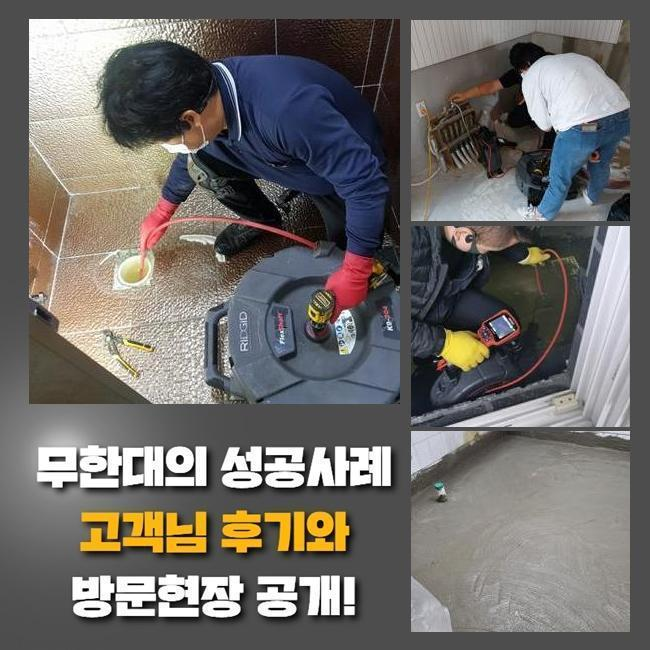
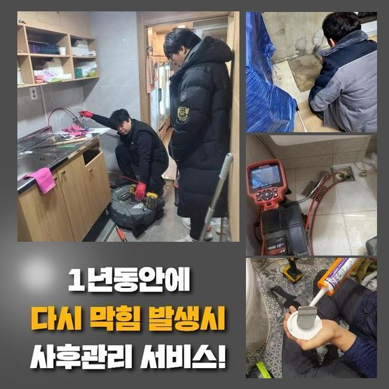
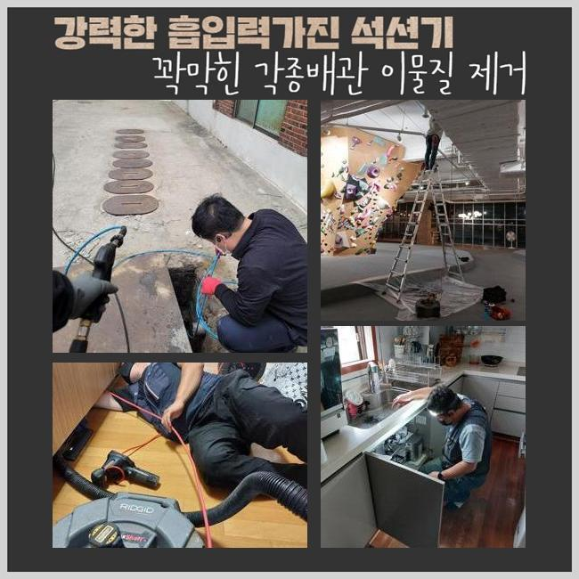
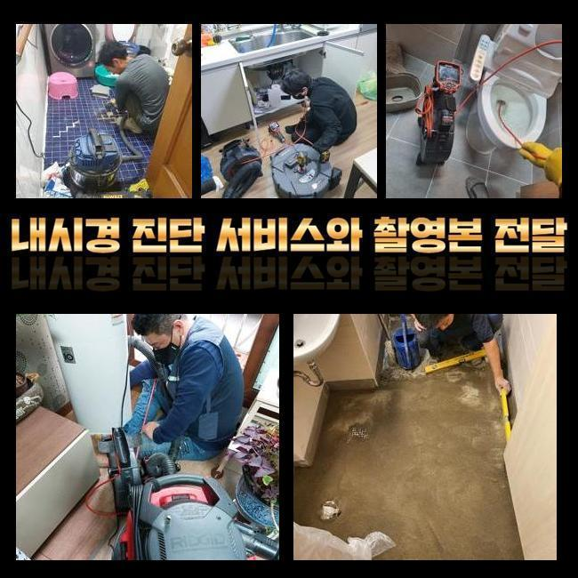
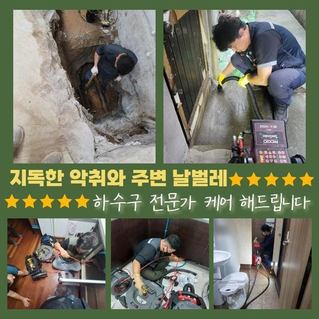

🏠 이천 증포동대변기뚫음 모가면 하수구뚫어주는곳 통수전문
용인 싱크대막힘 전문 시공 후기

📋 작업 개요
- 위치: 용인
- 서비스 유형: 싱크대막힘, 변기막힘, 하수구막힘, 배관막힘, 누수수리, 뚫는업체, 배관보수, 악취차단
- 작업 일시: 2025. 4. 3. 11:33
- 업체명: 하수구수사대 (010-5615-2118)
🔍 문제 상황
이천 증포동대변기뚫음 모가면 하수구뚫어주는곳 통수전문
생활을 하시다가 예측하지 않은 하수구 기능이 끊기면 불안한 마음을 겪을 수 있어요
현대인은 식사 시간까지 줄여가며 분주하게 생활하는데 그 와중에 갑자기 다른 곳에 시간을 빼앗기게 되면 일상에 큰 차질이 생기게 마련이죠
이런 상황에 놓이면 조속한 조치를 해달라고들 하십니다
통수장애를 겪는 고객님의 난감한 감정을 인식하고 있으니 즉각적인 내방과 완성도 높은 시공을 보장해 드리고 있어요
오늘 현장 역시 불현듯 찾아온 하수 중단 때문에 고객이 최대한 빨리 와달라고 요청해주신 부분입니다
평범한 삶을 보내시던 도중에 주방 싱크대 하단에서 누수가 되는 듯한 비정상적인 동태를 보게 됐다고 하셨어요
얼른 설비시설을 이용해야 해서 고쳐주시면 즉시 주방 설비 오류를 해소하고 싶으셔서 저희 측에 얼른 도움을 구하셨어요
접수를 해주신 이후 즉각적으로 작업지로 향해서 스피드있는 작업을 도맡기로 하였습니다
간단한 내역을 설명듣고 싱크대 근처에 야기된 문제를 조사해 봤습니다
주방에서 튼 수돗물이 방출되지도 못하고 동시에 역행까지 하니 물기가 스며드는 걸 막고 침수 피해를 다스리기 위해 패브릭 천을 밑에 두셨더라고요

🔎 원인 분석
💡 전문가 진단: 정밀 진단 장비를 사용하여 슬러지의 고착 여부를 판명하고 타격/세척 작업을 실시했습니다.
배수관 내측에서 울컥대며 나오는 수분은 대다수는 뿌옇고 더럽기 때문에 근처로 확 흩뿌려진다면 이걸 치우는 것도 수시간적인 자원과 체력이 낭비될 수 있습니다
각종 배관들에서 줄줄 새는 물은 잠시동안 잠가버리면 됩니다
역행까지 일어났다면 정체된 물의 양이 다 흘러나갈 때까지 물이 계속 나오니 오래 지속되는 어려움을 촉발하게 됩니다
악취까지 느껴진 걸 보니 오래두어 썩어버린 노폐물과 침전물이 싱크대 마비를 형성했을 게 뻔했습니다
제대로 진단하고자 잔여한 액체의 양을 없어지도록 만들고나서 관로 안쪽을 진중하게 관찰할 수순이라고 판단했습니다
석션의 동작을 통해 떡진 기름때들을 덜어낸 이후에 배관의 현황을 심도 깊게 봐주기로 했어요
석션통이 꽉 찰 정도로 물을 꺼내는데 성공했으나 아쉬운 점이 있다면 고형물은 거의 끌어올려지지 않았습니다
그러므로 막혀있는 파트를 직접 내시경으로 체크해야 할 상황이었습니다
실시간 모니터링이 가능한 내시경을 밀어 넣어서 물길이 어느정도 막혔나 검사를 거쳐보았습니다
특수 내시경이기 때문에 막히는 이물질의 종류를 이곳저곳 낱낱이 화면으로 비춰주니 막힘의 사유를 쉽게 지적할 수 있게 하는 장치라고 할 수 있어요
직접 보지 않고서 방출된 이물질로 왜 막혔나 생각해보는 절차가 아니라 내시경을 아래로 보내서 구불구불한 관로 구역까지 선명하게 보면서 배관 속사정에 대해 평가하도록 지원해줍니다

🔧 작업 과정
내시경을 활용하여 관로 상황을 보았더니 거대해진 슬러지가 매우 딱딱하게 붙어있었기 때문에 석션의 힘만으론 처리가 되지 못했던 상태였더라고요
게다가 음식찌꺼기들이 축적되어 가면서 상하게 되면서 냄새가 퍼지는 일까지 같이 발현됐을 것으로 판단이 내려졌습니다
오랜 시간이 흘러간지라 기름때들이 마치 거대한 뭉치처럼 고착화가 되어있었습니다
경화가 일어나면 석션기를 돌리는 걸로는 해소되지 못하다보니 디테일한 기능의 기기들이 힘을 더해주어야 해요
막히게 만든 사유를 모두 염두에 두고 회전력 기반의 샤프트 기계를 세팅했어요
이렇게 생긴 샤프트는 잘 휘어지는 노즐이 하수구의 최하단부까지 도달해서 노폐물들 해체할 수 있게 나온 첨단 기기입니다
또 플렉스 샤프트의 말단에 접착되어 있는 옹골차고 경도가 높은 헤드가 진동하면서 조금씩 접촉하면서 뭉친 걸 풀어냅니다
이 시공을 하면서 멀쩡한 배관까지도 데미지를 입힐 수 있으므로 과하게 세지 않게 조심하며 작업을 수행하게 됩니다
공들여서 분쇄를 해주었고 모든 단계를 끝내면서 한가득 차올라 있던 슬러지들을 제거하는 데 성공했고 재차 석션기로 자잘한 조각까지도 거두어 들였습니다
놓치기 쉬운 불순물을 내버려둘 경우라면 재차 막혀버릴 가능성을 무시할 수 없으니 세세하게 작업을 완성하게 되었습니다
강력하게 말라붙은 유분 뭉치의 경우는 샤프트 회전력으로 부숴버리고 석션기로 조각들을 수거까지 해줘야 새로운 배관차단을 막을 수 있습니다
샤프트와 석션 조합은 본연의 원리와 최고 효율을 내면서도 안전한 방향으로 이용을 해드리고 있으며 저희 작업을 거치면 새것처럼 변한 하수구라는 결론을 얻으실 수 있어요
오래 두면 내구성이 약해지는 마개나 주름관 등을 교체하는 절차도 추천할만 했는데요
현장에 달려있던 싱크대 파이프는 상당히 색이 빠진 상태였고 견고하지 않아서 누수가 될 여지가 충분한 상태로 보였습니다
야기될 수 있는 측면들을 친절히 안내 한 다음에는 못지 않게 손상된 배관의 덮개까지도 제시를 하면서 교체가 낫지않냐고 권했습니다
배관과 관련한 파트들을 같이 살펴본 이후에 교환을 자주자주 해주면 또다른 문제점까지 제어할 수 있습니다
향긋한 주방을 위해서 기존의 것과 비슷한 새 주름배관과 덮개로 교환하여 새것처럼 조성했습니다


✅ 작업 완료
현장에 꼭 들어맞는 딱 맞는 배수관을 재단하여서 장착해 드리고 변색된 주름관은 새 배관으로 바꾸어 안전한 배수구 환경을 만들어주었습니다
싱크대의 수선 절차를 야무지게 수행하고서 기능이 회복됐나 보려고 통수 검사를 돌입해서 개수대 안에서 배수물이 통쾌하게 흔적없이 사라지는지 관찰해보기로 정했습니다
그리고 교환도 해드린 주름배관도 흔들림 없는지 더블체크를 해보면서 저희가 맡은 뚫음과 보수가 성공적으로 완수되었는지 여러 차례 확인했네요
주방 싱크대 내부에서 수돗물이 유속이 더뎌진다거나 역행까지 벌어진다면 전문성있는 유지보수가 빠르게 적용되어야 할 것입니다
사건 접수만 해주시면 열정을 다하여 도움을 드리겠습니다



⚠️ 베란다 누수 및 방수 관리 방법
- ✅ 비가 많이 올 때 창틀 주변이나 아래층 천장에 얼룩이 생기는지 정기적으로 확인해 보세요.
- ✅ 우수관 주변 실리콘 마감이 들뜨거나 깨진 틈새가 있는지 손상 여부를 수시로 체크하세요.
- ✅ 베란다 바닥 타일의 줄눈(메지)이 소실되면 그 틈으로 물이 침투하여 누수가 유발됩니다.
- ✅ 누수 의심 증상 발견 시 방치하면 아래층 손실이 커지므로 즉시 전문가의 진단을 받으십시오.
💡 핵심 정리
- 확실한 장비 작업(내시경 점검 및 샤프트 스케일링)으로 원인을 뿌리 뽑습니다.
- 작업 후 1년 이내에 동일한 부위 재발 시 100% 무상 A/S 서비스를 보장합니다.
- 서울 · 경기 · 인천 전 지역에 24시간 언제든 긴급 출동할 수 있도록 항시 대기 중입니다.
❓ 자주 묻는 질문 (FAQ)
🚨 용인 싱크대막힘 문제로 고민이신가요?
정확한 원인 진단과 확실한 시공으로 재발 없는 해결을 약속드립니다.
24시간 긴급 출동 | 서울 · 경기 · 인천 전지역 | 1년 내 재발 시 무상 A/S